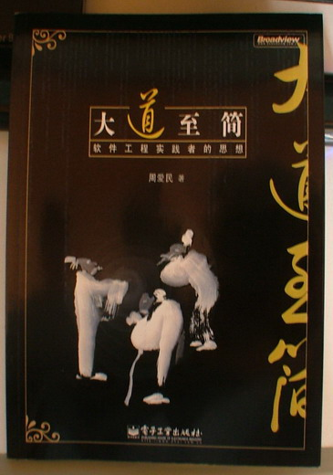

**一、坐飞机与机场小聚**
**~~~~
倒不是没坐过飞机，只是第一次坐得这么心惊胆战的。去的时候一切都好，回来的时候在上海虹桥机场降落，感觉不象是在“降”，而是在“坠”。心里一阵阵凉，连写遗书的心都有了。终于忍不住，远远地探过头看了一下窗外，哇已经看得到楼房了。心里暗喜：黑黑，掉下去也摔不死了。收了收心，定了定神，看了看周边的人，脸白的有，脸绿的有，就是没几个有人形的。
再回过头来说去北京。我是5号上午的飞机，中午12:00到。下飞机松松地就找到了CSDN的接待人员，那个大大的字母“C”很是扎眼，做接待牌硬是要得。再看接待的MM（叫什么来着？）很活泼地跑前跑后，ENCSDN搞得不错。
**[](http://p.blog.csdn.net/images/p_blog_csdn_net/aimingoo/194000/o_DSCF4647_%e7%bc%a9%e5%b0%8f%e5%a4%a7%e5%b0%8f.JPG)**
**（机场接待的牌子和临时休息的牛牛们）**
很快见到的是比我先来的几个与会者。WebEx的朱少民老师是闻名久矣，相谈也甚欢。还有吴建平、许世伟等好些人也是在这会儿见到了，大家呆了个把钟头就杀往停车场，随后是签到、午餐等
记不住名字是我的大问题。现场跟朋友们聊，再见面还记得都有谁，却要说名字，拿着名片对，也只能对出个七七八八。哎在这方面，搞技术的是不行。:(
所以下面有谁没提到，或者上面有谁记错了，原谅原谅
**二、签到**
**~~~~**
签到很简单，只是要拿出一个大本本要留名赠言的时候，却犯了难。好大的一个页，写几个字才占得满呢。——正在犯傻的时候，有人翻开前面的一看：哪里呀！人家都留个名儿写几个字，两三行的事情而已。我还以为要我写一页呢！赶紧红着脸去，写上一小行话，留个名字跑掉了。
午餐时已经快2点了，饿极了吃相自然不佳。旁边坐着的正是机场接待的那个MM，被大家拿来开着玩笑，气氛很是热烈。忘了坐她对面的是哪个GG，反正差不多已经被我们羞得快疯掉了。
休息了约半个小时，然后一群人被领着去了CSDN总部（忘了说了，住的地方是“国宾大厦”——看起来名字很大，却是吓唬外地人的。这个大厦的对面不远就是CSDN总部了）。我最感兴趣的就是CSDN总部了，搞得很家庭一样。哈哈。这里挂了N多气球，到处是人，而且看起来开发部、市场部等等都派了代表接待大家，或者介绍工作场所，或者引见某些要人。CSDN的小会议室很小，看起来有点压抑。所以我估计开会的人不会舒服，所以开不久，所以工作效率就会高。我想这是不错的设计。

**（CSDN****挂了Ｎ多气球）**
****
**（工作场所之一）**

**（工作场所之二：有人跟我一样喜欢格格巫）**

**（工作场所之三：小伙儿挺帅呆）**

**（CSDN****的内景大概）**

**（换个角度）**

**（CSDN****，偶喜欢这个东东）**
见蒋涛的时候最搞笑。跟他是老熟人了，所以老远地隔了三、四道桌子就看到了，然后高声呼喝着向一个方向绕。绕到了一看，中间夹着七八九个人，要握个手也难，于是都笑了起来。中间的人看出情况，让出个道儿来，这才跟蒋涛握了握手。遂闪到一旁，聊起家国大事来了。——其实也没啥大事，无非是东家的媳妇又生了个娃，西家的娃子又找了份工作，南头的老张开了公司，北边的大爷看样子快不中了，或者就是CSDN去年收成不错，今年看样子会更好，明年后年地就得雇更多的长工了。大略如此。不过相谈甚欢，蒋涛为人向来随和，所以也不介意我东拉西扯地瞎聊。
CSDN在公司搞了一个小型的欢迎会，大抵是想介绍一下CSDN的规划。在这个间隙里，见到了好多CSDN中合作已久或名闻已久的人物，陈瑞江在我旁边聊了很长时间，还有孟迎霞老师特地跑来向我大大地夸奖了一番麦秸的垛，回家给麦秸儿(joy)说起来，让她很是开心了一阵。还跟孟老师谈到了身体是革命的本钱，以及第三次西藏出行计划，又是让孟老师好生羡慕，直感叹自己为啥不换个法子生活——哎，其实换就换了，只要愿意怎样生活都行。矛盾是自找的，压力不也是自找的么？孟岩早就见过，这会儿见得他跑上跑下忙得不亦乐乎，便不忍打搅，默默走开了。
身前身后坐的都是牛人，也不少聊天。记不真切都有WHO，好象有肖桦，杜亮，还有刘建明。
****
**（欢迎会现场）**
**三、晚宴**
**~~~~~~**
晚宴最热闹。没参加晚宴的牛牛们是要大大遗憾的了。
晚宴开始的时候气氛沉闷，我们这桌决心要大家自我介绍一下，端着酒杯轮流开讲。正这时候，曾总曾登高（一定要强调“曾总”啊，我第一次见他居然叫成了“曾主任”，也不知是跟哪年哪月哪人的事情混为一谈了）开始组织大家自我介绍。从第一桌开始，牛人们纷纷涌现，许多朋友们的介绍都获得热烈的掌声，一时间我耳边如洪水涛天，各色各式（？）的牛人们从耳边呼啸而过，那个过瘾啊…不用提了。反正无以言表，有机敏的，有木吶的，有激扬的，有轻柔的，有请客吃饭的，有陪玩陪住的，有呼邻唤朋的，有携妻扶朋的，酒过三巡，菜过五味，语声渐烈，到后来都有喊破话筒震坏音箱的……那个热闹场面啊，只有喝了酒的程序员们才搞得出来。哈哈。
晚宴中见了很多的朋友，实在太多了。包括InfoQ的霍泰稳总编、ZDNET的李宁主编，两位都是在MSN中交往了一段时间却从未见过面的，而且看样子还得继续欠我饭饭的朋友。再见孟岩，这老兄居然非得说我们第三回见面，然而除了跟李维一起吃烤鸭之外便再也讲不出第二件，鬼知道是不是他哪回做大梦时见到过我，这会儿却又不便承认……哈哈哈~
****
**（牛人们听讲的姿态很有特点）**
****
**（我是牛人呜哩哇啦——名字偶记不得啦）**
晚宴中，博文视点的佘广告诉我《大道至简》印出来了一册。听得我眼睛瞪得大大的：难道印书是一册册地单印的？结果不是，当天只印了一册样书，晚上加班再印两百册，明早送到会场做赠送。哦~吓得我一身汗，原来这个印刷厂的工效也就一晚印两百册，真是偷懒啊。。。安拉。
得知第二天大会有200册《大道至简》可赠送，心事也总算放下来。博文的周筠老师一早便说要在大会里送出200册，但书的印刷排版等事却一拖再拖，几乎把我磨得信心全无……现在总算成了定局。哎长呼一口气啊
正在感叹中，大会的自我介绍结束了。一干人等开始来推杯换盏，互述友情。同桌的朋友有点不胜酒力了，便约着一道回宾馆去，在他的房间中坐了小坐，看没有什么需要我帮助的。便回自己房间去了。
在房间里看着书。不久，同屋的是网易的赖勇浩回来了，又聊了聊天。再晚些的时候，CSDN的工作人员又一间间地来敲房门了，每人发给一个胸卡用来写名字。听着他们的声音都沙哑了，很是疲惫的样子，便不再多讲，只嘱托他们早早休息。然后，上床，睡觉。
**四、大会**
**~~**
第二天(4.6)一早，开了一个多小时的车才到会场。到达的时候，便已经没什么位置了。只得靠很后面的座着。然后上敲鼓、致辞、发奖、讲演等等一干惯例之事，这是第一次看到韩磊，样子挺帅酷，背书的功底应加强。随着气氛越来越热烈，现场也是越来越热。终于是熬煎不住了，走出去透透气，一眼便望见了周筠老师，上去打个招呼。——结果，她极端惊讶地看着我，说：电话还没拔出去，你怎么就来了？再一看他手上的电话，号码正是我的。哈哈，看来~哈哈~~不好意思用什么“心有犀牛角尖尖”之类的词，但的确是是“怎生这般的巧法”。
****
**（大会现场，中间的CSDN****几个字很亮眼）**
****
**（鼓儿要敲敲敲敲敲）**
****
**（话儿要讲讲讲讲讲）**

**（模样儿要帅帅帅帅帅）**

**（发奖第一轮）**

**（发奖第二轮，右数第三个站姿真革命）**

**（发奖第三轮，(Ｑ：老兄，你的奖杯好象比较大)）**

**（演讲开始，各位大师都讲得很好听，我就不一一贴了）**
周老师便立即介绍我的书。黑黑~第一眼看去便喜欢上了。这种印刷的感觉真是不错，周老师则在一旁敲边鼓，说这书的印刷很是让人艳羡，有作者已经在说周老师不公平了。哈哈哈。当然且不管周老师是不是偏向偶，看到这样自己的书印出来总是开心的。正在美滋滋忘乎所以的时候，博文视点的方舟跳了出来。我的《Delphi源代码分析》和《大道至简——软件工程实践者的思想》都是方舟设计的封面，这次可是见到真人了。不太高，有点胖，很和善，长得很艺术，有佛相。——反正是看一眼就记得住的那种，跟高高的孟岩站一起，三个和尚就差一个了。——嗯，我总算为他不喜欢丘宝（卓彦）设计的三个和尚找到了相当充分的理由。
****
**（左边是偶，中间是书，右边是方舟）**
接下来被N多人要签名。先是博文内部的朋友，跟大家合作了N久，留个名儿是应该的。接下来是现场的网友们，匆匆的签了几个，借了个空儿就溜掉了。——黑黑～要低调～低调～我自认还没有出名到要搞现场签售，或签赠的那个水平。没那个水平，便不要搞那个势头，所以急急的跑掉，躲到一边跟温昱、林锐、周筠等聊天去了。
现场还不错，很热闹。看着里面的大会还没有结束，就已经有人三三两两的出来到处找饭吃，便想着自己也饿了。二楼没偶的份儿（据说那是要红色餐票的），没搞懂，便跑到一楼去。却没想碰到一个老朋友张驰，寒喧了两句就去饭去了。
饭间又有与人长聊深谈，细节不表，时间飞快又到下午。下午场的是创业英雄论坛和CEO论坛。感觉这两个论坛倒是搞得有声有色，其间周鸿祎和谭老大发言都精彩，讲的都很到位。不同的是一个言词激越、声情并冒（这个字没打错），另一个平稳沉静、话到实处。这些大牛、先进们的讲演和论争确是值得大家看，不过呢网上这种文字不少，所以内容细讲也就无趣了，各位自己找去看便是。
随后又开始专题演讲，我又走出会场四处逛逛。没想到哈没想到，这就碰上了一个人，名叫王开源。此人说来就话长了，可是十多前年的老交情啊。我九六年在北京工作过半年，那是在中关村北大南门边的一个叫海燕宾馆的地方，那家公司呢，在IT界混过十多年以上的人大多会知道，是叫惠软软件。这可是最早跟微软打官司的公司，哈哈。这王开源先生呢，跟惠软的老板私交不错，所以也就常来公司逛逛逛逛逛逛～当然我那时不过是年轻孩（市场、开发、文档、广告身兼数职的），而王开源先生也不过二十来岁，所以少不了打招呼送茶水侃大山之类。但后来我离开惠软后便再未见过他，没想到他却去了CSDN（最近又从CSDN离职了）。哎～～这里的故事讲起来就长长长长~~了。于是乎跟故友天南海北、张三李四王五麻子的聊了半个小时。又主动给他签个名儿。——他是因为看到这本《大道至简》，觉得应该是我写的，便好一通找寻方才找到我的，而我也应当给老友留个念想，故而主动提出来签个名，留个念。——随后二人话别，相约后会无期许许～更无细叙。
****
**（这位老兄，要照片的mail****我）**
** **

**（孟岩）**
** **

**（曾总曾登高，下次不叫曾主任了）**
这时节，大会眼看着要结束，已是开始组织去微软研发中心参观了。我却接到老哥电话，说老妈要等我今晚一起吃饭。哎～～～母命难违，原本计划中的微软参观、晚上聚餐等等一概放弃。——妈妈是唯一的，大餐随时可聚，微软随时可去，所以呢～各伴大虾巨牛肥哥瘦妺，今晚偶老周对不住了，先行告辞去也。
**五、返程**
**~~~~**
周六CSDN组织的登长城没去，十年前就登过三回，没有一回留得成影，从此伤了心再不登长城。再加上老妈在京，应该陪陪她老人家，所以一早就给CSDN的朋友们说过，这个活动不参加了。
晚上去见了见dwwang。这个神仙估计还有人记得，记不得也就罢了，我以后的文章中不会再提这个ID，因为dwwang许多年前就退隐了，我后来见过他（本人）一面，却再不知他是dwwang，这次是去还了这个心愿的。总而言之，dwwang之于大富翁(DelphiBSS)，是某个神话时代的事情了。席间有老千和晓东，二人都是老朋友了，酒话之中，谈到的老朋友们，自然不会少了tqz、DNChen、Soul、creation-zy、小天、Xiaogang、5415这些历史中的DelphiBBS ID。
哎～俱往矣，数风流人物，我是最衰～
第二日，回程。从飞机上腿软心寒地走下来，出得机场，麦秸儿(joy)已经开车来接。拿出一本《大道至简》来，她开心得又蹦又跳，直呼：“老公真厉害～”
我心里想着这两天在英雄大会场内场外的所见所知，嘴里却没说出来：“没见过牛人，甭乱说话！”
**最后宣传下下我的书，网上订购请往：**
[http://www.dearbook.net.cn/book/170465](http://www.dearbook.net.cn/book/170465)
